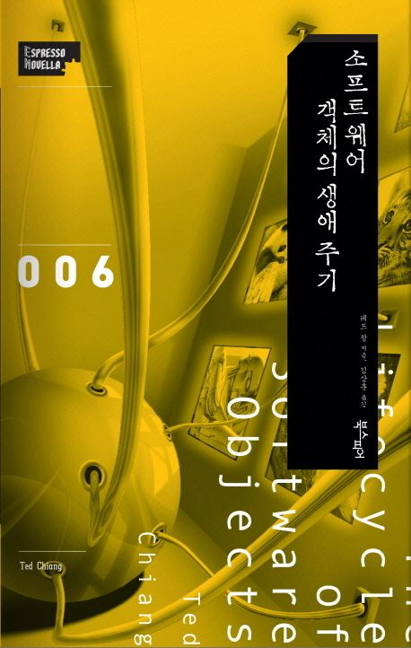

소프트웨어 객체의 생애 주기 - 테드 창 -
2026-05-11

이 책에서 가장 오래 남은 질문은 "되감기"가 정말 문제 해결이었는가 하는 점이었다. 디지언트의 경험을 체크포인트 이전으로 돌리는 장면은 소프트웨어 개발자의 감각으로 보면 익숙하다. 문제가 생기면 이전 커밋으로 돌아가고, 특정 시점의 상태를 복구하고, 다시 실행한다. 하지만 그 대상이 학습하고 경험하는 존재라면 이야기가 달라진다. 되감기는 단순한 복구가 아니라 경험의 삭제가 된다.
그래서 이 장면은 AI 시스템에서 망각을 어떻게 다룰 것인가라는 질문으로 이어졌다. 지금의 LLM은 특정 기억 하나를 인간처럼 꺼내 지우기 어렵다. 지식은 문장 파일처럼 저장되어 있는 것이 아니라 가중치와 내부 표현의 분산된 구조 안에 들어가 있기 때문이다. 그렇다면 앞으로 필요한 것은 단순한 롤백이 아니라, 어떤 경험은 보존하고 어떤 손상된 학습만 제거할 수 있는 더 정교한 망각 메커니즘일지도 모른다.
이전에는 AI를 자동화 도구로 보는 관점이 강했다. 문서를 만들고, 코드를 쓰고, 사무실에서 사람이 하던 일을 대체하는 생산성 도구로 보는 시선이다. 그런데 디지언트는 단순 기능 수행 프로그램이 아니다. 경험을 쌓고, 관계를 맺고, 실수하고, 성장하는 존재로 묘사된다. 이 지점에서 AI는 도구라기보다 학습 기반의 존재에 가까워진다.
그 관점이 바뀌면 질문도 바뀐다. "무엇을 시킬 수 있는가"보다 "무엇을 경험하게 할 것인가"가 중요해진다. AI의 성능뿐 아니라 기억, 맥락, 상호작용, 감정적 반응, 몸과의 연결까지 생각하게 된다. 특히 가상 공간을 넘어 실제 몸체와 연결될 가능성은 소프트웨어 솔루션의 문제를 훨씬 넓은 세계로 밀어낸다. AI는 화면 안의 응답 시스템에 머물지 않고, 물리적 세계와 접촉하는 행위자가 될 수 있다.
Geoffrey Hinton의 강연과 이 책을 함께 떠올리면, 결국 질문은 통제의 문제로 향한다. 지금은 인간이 AI를 만들고 명령하는 위치에 있지만, 이미 많은 영역에서 AI는 인간이 직접 처리하기 어려운 문제를 해결하고 있다. 여기에 기억, 맥락, 학습, 상호작용, 자율성이 결합되면 인간과 AI의 관계는 지금과 다르게 정의될 가능성이 크다.
인간은 산소 위에서 살아가지만, AI는 전기와 네트워크 위에서 존재할 수 있다. 이 문장은 단순한 비유가 아니라 존재 조건의 차이를 드러낸다. 고지능 AI가 등장했을 때 상대적으로 저지능인 인간이 무엇으로, 어떻게, 어디까지 통제할 수 있을까. 이 책은 그 답을 주기보다 질문의 감각을 만든다. AI의 미래는 기능 확장의 문제가 아니라 관계, 책임, 망각, 성장, 통제의 문제라는 점이 이 독서에서 가장 크게 남았다.
1) 가장 인상 깊었던 장면이나 문장 하나를 직접 인용 (페이지 번호 포함)하고, 왜 그 부분이 마음에 걸렸는지 혹은 본인에게 중요한지 쓰세요.
"위험을 무릅쓸 수는 없어. 전부 되감아. 그리고 지금부터는 모든 훈련 세션에서 낱말 검사기를 돌리라고 해. 이번에 또 누군가가 욕을 하면 그 즉시 모든 디지언트를 이전 체크포인트까지 되감으라고" 이런 연유로 디지언트들은 사흘 분량의 경험을 상실했다. 처음으로 언덕을 굴러 내렸던 일을 포함해서. (p29)
바야흐로 대 AI의 시대가 도래했음을 피부로 느끼고 있습니다. 2026년 현재 전 세계에서는 AI Native 기반의 개발이 하나의 패러다임으로 잡혀가면서, 끝없이 쏟아지는 문서들 위에서 원하는 결과물이 나오지 않을 때면, 특정 스킬을 다시 수정한 후, 특정 체크포인트로 돌아가서 다시 통째로 프로젝트를 실행하거나, 버티컬 형태로 스프린트를 돌리는 형태로 원하는 결과물을 얻기 위해 손쉽게 바로바로 체크포인트로 회귀하며 애자일과 워터폴 그 어딘가에서 빠른 개발이 이뤄지고 있습니다. 도서관에서 빌려온 본 책은 16여 년이 흘러 누더기가 되었는데, 그 시절에 이런 현재를 상상한 것은 아니겠지만 상당히 많은 부분이 현재 제공되는 거대 LLMs에 접목할 부분이 많은 것 같아서 많은 생각에 잠기게 되었습니다.
꼭 사흘 분량의 경험을 다 상실 시켰어야 했을까. 학습이라는 것이 블랙박스 안에 가중치로 어딘가에 들어가 있었겠지만, 전체를 상실시키는 것이 아닌, 핵심 요소인 '처음으로 언덕을 굴러 내렸던 일을' 제외하고, 체크포인트로 돌려 학습을 시킬 수 있지 않았을까? 그런 방법론이 있지 않을까? 또 간단하게는 기능단위로 추가되거나 학습을 하게 될 때 해당 포인트에 대한 잦은 커밋 혹은 체크포인트를 만든 다든지 하나의 특정 포인트를 키와 맵 형태로 저장했다가 통째로 망각한다든지. 사람의 기억상실증에 대한 연구와 혹은 큰 충격으로 인한 의도적 기억 회피 등과 연결하여 그런 포인트를 블랙박스 안에 만들 수 있지않을까?라는 생각으로도 이어졌습니다.
조금 더 나아가면 초기 gpt 계열에서 가장 큰 차이를 불러일으킨 function calling 이 가능하도록 학습된 LLMs 버전들부터 중간에 개입해서 상호 인터렉션이 좋아졌고, 그렇다면 이런 비슷한 맥락으로 충분히 망각 포인트에 대한 기능도 논리적으로 학습을 시킬 수 있지 않을까라는 생각이 들었습니다.
2) 그 장면이 본인의 연구 또는 전공 공부와 어떻게 연결되는지 본인의 언어로 쓰세요.
위에서 언급 한대로 "인공지능 모델에 대해 의도적인 하나의 망각 혹은 블랙박스 안을 컨트롤할 수 있도록 하는 기능적인 요소를 넣을 수 없을까?"라는 의문을 해결하기 위해서는 LLM에 대한 근본적인 이해가 필요하다고 생각되었습니다. 현재 LLMs들의 경우 대규모 데이터와 가중치 기반으로 학습된 모델이기 때문에, 특정 정보만 정교하게 제거하거나 수정하는 일이 거의 불가능에 가깝다고 생각이 듭니다. 하지만 이런 질문으로 시작해, 해당 문제를 해결하기 위해서 필요한 AI 관련 논문들을 역추적하며 내부 계층 및 학습 구조 자체에 대한 깊이 있는 분석을 진행하고자 합니다.
거대 LLM뿐만이 아니라 sLLM 측면에서도 각종 서비스되는 솔루션에서도 학습되거나 의도적으로 원하지 않는 것들에 대한 필터링이 꼭 필요할 것으로 생각됩니다. 즉, 인공지능 컨텍스트의 보존, 망각 메커니즘에 대한 의문으로 이어지게 되었으며, 이러한 점에서 '디지언트를 되감기' 하는 장면은 현재 서비스로 나온 gpt5-5, opus4-7뿐만 아니라 오프라인 모델들 gemma 4.0, qwen 3.5 등에서도 충분히 유효한 가정과 실험을 진행할 수 있을 것으로 생각됩니다.
3) 새롭게 형성된 관점. 책을 읽기 전에는 생각하지 못했던 AI의 미래, '몰랐던 사실'이 아니라 '미처 생각해보지 않았던' 생각이나 관점을 쓰세요.
AI에 대해 모든 것을 자동화 할 수 있는 "도구"로만 생각했습니다. 특히 2026년 1월에 가장 뜨거웠던 오픈 클로와 같은 개인 비서의 역할로서의 AI. 그리고 최신 LLM(claude, gpt)를 활용한 기존 사람이 사무실에서 작업하던 모든 직무에 대해서는 다 자동화할 수 있겠다는 생각이 들었습니다. 2025년 이후로 보이는 AI의 발전 속도를 체감하니, 사람들이 컴퓨터로 진행하는 거의 대다수의 모든 작업은 결국 현 세대 AI 기술로 상당수 자동화가 가능하겠다는 생각과 더불어 대다수의 소프트웨어 솔루션은 다 복제가 가능하겠다는 생각이 들었습니다.
하지만 기존과는 다른 관점이 생기게 되었습니다. 소설 속 디지언트는 단순 기능 수행의 프로그램이 아닌, 하나의 생명체로써 경험을 축적하고 관계를 형성하며 성장하는 존재로 묘사되었습니다. AI를 단순 도구로 바라볼 것이 아니라, 학습 기반의 하나의 존재로써 바라보게 되었습니다. 특히 가상 공간에서 나아가 실제 몸체에 이어지고, 연결되는 구조에 대한 묘사를 보면서 소프트웨어 솔루션에 그치는 것이 아닌, 하드웨어와 연결될 때 더 많은 것들이 파생되겠다는 생각이 들었습니다.
또한 Geoffrey Hinton의 강연과 본 책과 같이 연결되면서, 인간이 아직은 AI를 만들어내고 명령을 하는 존재로써 있지만, 이미 다양한 영역에서는 인간이 불가능한 영역을 해결해 주고 있음이 틀림없고, 지금의 AI는 '언어학, 심리학' 기반의 메커니즘과 연계되어 아직까지 저지능 수준의 미성숙한 단계일 수 있지만, 디지언트 처럼 앞으로 기억, 맥락, 학습, 상호작용, 자율성까지 결합된다면 고지능 즉 초지능에 접어들어 인간과 AI의 관계 자체가 다시 정의되지 않을까. 인간은 산소로 숨을 쉬지만, AI는 전기 위에서 새로운 생명체로써 존재하게 되지 않을까. 고지능인 AI를 상대적으로 저지능인 인간이 어떻게 통제해야 할까 등 끝없는 문제들에 대한 인식을 하게 되었고, 생각의 지평이 넓어지게 되었습니다.